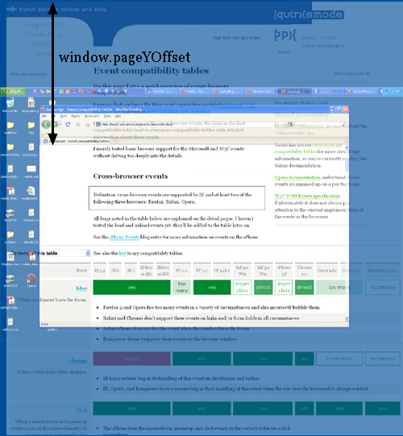
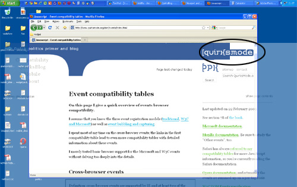

- 两个视口的故事一A tale of two viewports - part one
- 两个视口的故事二A tale of two viewports - part two
Part one
在这个小系列中，我将解释视口和各种重要元素的宽度如何工作，例如<html>元素，以及窗口和屏幕。
此页面是关于桌面浏览器的，其唯一目的是为移动浏览器的类似讨论设置阶段。 大多数Web开发人员已经直观地理解了大多数桌面概念。 在移动设备上，我们会发现相同的概念，但更复杂。
因此，事先讨论每个人已经知道的术语将极大地帮助您理解移动浏览器。
Concept: device pixels & CSS pixels 概念: 设备像素和CSS像素
您需要了解的第一个概念是CSS像素，以及与设备像素的差异。
设备像素是我们认为“真实”的像素类型。这些像素为您正在处理的任何设备提供正式分辨率，并且（通常）可以从screen.width / height读出。
如果你给某个元素一个宽度：128px，你的显示器是1024px宽，并且你最大化你的浏览器屏幕，那么你的显示器宽度可以包容8个该元素（粗略地说，让我们暂时忽略这些棘手的部分）。
但是，如果用户缩放浏览器页面，则此计算将发生变化。如果用户放大到200％，即放大2倍，则宽度为128px的元素在其1024px宽的显示器上仅适合四次。
在现代浏览器中实现的缩放只不过是“拉伸”像素。也就是说，元素的宽度不会从128像素变为256像素;相反，实际像素的大小加倍。形式上，该元素仍然具有128个CSS像素的宽度，即使它恰好占用256个设备像素的空间。
换句话说，放大到200％会使一个CSS像素增长到一个设备像素大小的四倍。 （宽度的两倍，高度的两倍，总共产生四倍）。
一些图像将阐明这一概念。这是100％缩放级别的四个像素。没什么可看的; CSS像素与设备像素完全重叠。

现在让我们缩小浏览器页面大小。 CSS像素开始缩小，这意味着一个设备像素现在与几个CSS像素重叠。
如果放大，则会发生相反的情况。 CSS像素开始增长，现在一个CSS像素与几个设备像素重叠。

这里的要点是你只对CSS像素感兴趣。 这些像素决定了样式表的呈现方式。
设备像素几乎完全没用。
用户将放大或缩小页面直到他可以舒适地阅读它。 但是，缩放级别对您无关紧要。 浏览器将自动确保您的CSS布局被拉伸或挤压。
100% zoom 100%缩放
我假设缩放级别为100％开始了这个例子。 现在是时候更严格地定义：
在缩放级别100％时，一个CSS像素正好等于一个设备像素。
100％缩放的概念在接下来的解释中非常有用，但您不应该在日常工作中过度担心它。 在桌面上，您通常会以100％缩放测试您的网站，但即使用户放大或缩小CSS像素的魔力也会确保您的布局保持相同的比例。
Screen size 屏幕尺寸
我们来看看一些实际测量。 我们将从screen.width和screen.height开始。 它们包含用户屏幕的总宽度和高度。 这些尺寸是以设备像素为单位测量的，因为它们永远不会改变：它们是显示器的一个功能，而不是浏览器的功能。

有趣！ 但是我们如何处理这些信息呢？
基本上没什么。 用户的显示器大小对我们来说并不重要 - 除非您想测量它以用于Web统计数据库。
Window size 窗口尺寸
反而，您想知道的是浏览器窗口的内部尺寸。 这可以告诉您用户当前有多少空间可用于CSS布局。 您可以在window.innerWidth和window.innerHeight中找到这些尺寸。

显然，窗口的内部宽度是以CSS像素为单位测量的。 您需要知道可以在浏览器窗口中挤出多少布局，并且随着用户放大，该数量会减少。因此，如果用户放大，则窗口中的可用空间会减少，而window.innerWidth / Height会反映出来减少。
（这里的例外是Opera，其中window.innerWidth / Height在用户放大时不会减小：它们是以设备像素为单位测量的。这在桌面上很烦人，但在移动设备上会很致命，我们稍后会看到。）

请注意，测量的宽度和高度包括滚动条。 它们也被视为内部窗口的一部分。 （这主要是出于历史原因。）
Scrolling offset 滚动偏移
window.pageXOffset和window.pageYOffset，包含文档的水平和垂直滚动偏移。 因此，您可以了解用户滚动了多少。

这些属性也以CSS像素为单位进行测量。 您想知道已经滚动了多少文档，无论它处于何种缩放状态。
理论上，如果用户向上滚动然后放大，window.pageX / YOffset将会改变。 但是，浏览器尝试通过在用户缩放时将相同元素保持在可见页面的顶部来保持网页的一致性。 这并不总是完美无缺，但这意味着在实践中window.pageX / YOffset并没有真正改变：滚出窗口的CSS像素数量保持（大致）相同。

Concept: the viewport 概念: 视口
在继续使用更多JavaScript属性之前，我们必须引入另一个概念：视口。
视口的功能是约束<html>元素，它是站点中最上面的包含块。
这可能听起来有点模糊，所以这是一个实际的例子。假设您有液体布局，其中一个侧边栏的宽度为10％。现在，当您调整浏览器窗口大小时，侧边栏会整齐地增长和缩小。但究竟是如何运作的呢？
从技术上讲，会发生边栏获得其父级宽度的10％。假设是<body>（并且你没有给它宽度）。所以问题就变成了<body>的宽度。
通常，所有块级元素都占用其父级宽度的100％（有异常，但现在让我们忽略它们）。所以<body>和它的父<html>元素一样宽。
<html>元素有多宽？为什么，它和浏览器窗口一样宽。这就是为什么宽度为10％的侧边栏将覆盖整个浏览器窗口的10％。所有Web开发人员都直观地了解并使用了这一事实。
你可能不知道的是它在理论上是如何运作的。理论上，<html>元素的宽度受视口宽度的限制。 <html>元素占用该视口宽度的100％。
反过来，视口完全等于浏览器窗口：它已被定义为这样。视口不是HTML构造，因此您无法通过CSS对其进行影响。它只有浏览器窗口的宽度和高度 - 在桌面上。
在移动设备上，它要复杂得多。
Consequences 后果
这种状况有一些奇怪的后果。 你可以在这个网站上看到其中一个。 一直向上滚动到顶部，然后放大两到三步，以便该站点的内容溢出浏览器窗口。
现在滚动到右侧，您将看到站点顶部的蓝色栏不再正常排列。

此行为是视口定义方式的结果。 我给了顶部的蓝色条宽度：100％。 100％的是什么？ <html>元素，与视口一样宽，与浏览器窗口一样宽。
重点是：虽然这在100％缩放时工作正常，但现在我们放大了视口已经变得小于我的网站的总宽度。 内容现在溢出<html>元素本身无关紧要，但该元素设置了overflow: visible，这意味着任何情况下都会显示溢出内容。
但蓝色的顶栏没有溢出。 我给它一个宽度：100％，毕竟，浏览器遵守视口的宽度。 他们并不关心那个宽度现在太窄了。

document width? 文档流宽度
（或者文档对象宽度？）
我真正需要知道的是页面的总内容有多宽，包括“突出”的位。据我所知，不可能找到该值（好吧，除非你计算在页面上的所有元素各自的宽度和边距 ，但这是容易出错的。
我开始相信我们需要一对JavaScript属性（宽和高），它给出了我所谓的“文档宽度”（显然是CSS像素）。
如果我们真的感觉很时髦，为什么不将这个值暴露给CSS呢？ 我希望能够制作宽度：我的蓝色条的100％取决于文档宽度，而不是<html>元素的宽度。 （但这肯定是棘手的，如果不可能实现，我也不会感到惊讶。）
浏览器厂商，您怎么看？
Measuring the viewport 测量视口
您可能想知道视口的尺寸。 它们可以在document.documentElement.clientWidth和-Height中找到。

如果你知道你的DOM，你知道document.documentElement实际上是<html>元素：任何HTML文档的根元素。 但是，视口高一级，可以这么说; 它是包含<html>元素的元素。
在那种情况下，document.documentElement.clientWidth和-Height仍然给出视口的尺寸，而不是<html>元素的尺寸。 （这是一个特殊规则，仅适用于此对属性元素。在所有其他情况下，使用元素的实际宽度。）

因此，无论<html>元素的尺寸如何，document.documentElement.clientWidth和-Height始终都会提供视口尺寸。
Two property pairs 两个属性对
但是不是window.innerWidth / Height给出的视口宽度的尺寸？ 嗯，是的，不。
两个属性对之间存在形式上的差异：document.documentElement.clientWidth和-Height不包括滚动条，而window.innerWidth / Height则包含滚动条。
我们有两个属性对的事实是浏览器大战的延续。 那时Netscape只支持window.innerWidth / Height和IE only document.documentElement.clientWidth和-Height。 从那以后所有其他浏览器开始支持clientWidth / Height，但IE没有选择window.innerWidth / Height。
有两个可用的属性对是桌面上的一个小麻烦 - 但事实证明，这对移动设备来说是一种祝福，我们将会看到。
Measuring the <html> element 测量html元素
所以clientWidth / Height在所有情况下都给出了视口尺寸。
但是我们在哪里可以找到<html>元素本身的尺寸？ 它们存储在document.documentElement.offsetWidth和-Height中。

这些属性真正允许您作为块级元素访问<html>元素; 如果设置宽度，offsetWidth将反映它。

Event coordinates 事件坐标
然后是事件坐标。 发生鼠标事件时，会暴露不少于五个属性对，以提供有关事件确切位置的信息。 对于我们的讨论，其中三个很重要：
| 属性对 | 作用 |
|---|---|
| pageX/Y | 给出了CSS像素中相对于``元素的坐标 |
| clientX/Y | 给出CSS像素中相对于视口的坐标 |
| screenX/Y | 给出设备像素中相对于屏幕的坐标 |
您将在90％的时间内使用pageX/Y; 通常你想知道相对于文档的事件位置。
另外10％的时间你会使用clientX/Y. 您永远不需要知道相对于屏幕的事件坐标。
Media queries 媒体查询
最后，关于媒体查询的一些话。 这个想法非常简单：您可以定义特殊的CSS规则，仅当页面宽度大于，等于或小于特定大小时才执行。 例如：
div.sidebar {
width: 300px;
}
@media all and (max-width: 400px) {
/* 宽度小于400px时指定的样式; */
div.sidebar {
width: 100px;
}
}现在侧边栏宽300px，除非宽度小于400px，在这种情况下侧边栏变宽100px。
问题当然是：我们在这里测量的宽度是多少？
有两个相关的媒体查询： width/height和device-width/device-height。
| 属性 | 作用 |
|---|---|
| width/height | 使用与documentElement .clientWidth / Height（换句话说，视口）相同的值。 它适用于CSS像素。 |
| device-width/device-height | 使用与screen.width/height相同的值（换句话说，屏幕）。 它适用于设备像素。 |

你应该用哪个？ 当然，这是一个明智的选择：width。 Web开发人员对设备宽度不感兴趣; 这是浏览器窗口的宽度。
所以在桌面上使用宽度并忘记设备宽度。 正如我们所看到的，移动设备的情况要严重得多。
Conclusion 结论
这就结束了我们对桌面浏览器行为的尝试。 本系列的第二部分将这些概念移植到移动设备，并突出了与桌面的一些重要差异。
Part two
在这个小系列中，我将解释视口和各种重要元素的宽度如何工作，例如<html>元素，以及窗口和屏幕。
在这个页面里，我们将讨论移动浏览器。 如果您对移动设备完全陌生，我建议您先阅读有关桌面浏览器的第一部分。
The problem of mobile browsers 移动浏览器的问题
当我们将移动浏览器与桌面浏览器进行比较时，最明显的区别是屏幕尺寸。移动浏览器显示的网站，桌面优化显着少于桌面浏览器，或者通过缩小直到文本不可读的小，或者只能显示桌面网站的一小部分。
移动屏幕远小于桌面屏幕，考虑最大宽度为400px，有时候要少得多。 （有些手机报告的宽度较大，但它们在撒谎 - 或者至少给我们无用的信息。）
平板电脑设备之中，如iPad或传闻中的基于HP webOS的平板设备，将弥合台式机和移动设备之间的差距，但这不会改变根本问题。网站也必须在移动设备上运行，因此我们必须让它们在小屏幕上显示。
最重要的问题集中在CSS上，尤其是视口的尺寸。如果我们一对一地复制桌面模型，我们的CSS就会开始惨不忍睹。
让我们回到我们的侧边栏，宽度：10％。如果移动浏览器与桌面浏览器完全相同，那么它们最多只能生成40px宽的元素，而且这个元素太窄了。你的液体布局看起来会非常可怕。
解决问题的一种方法是为移动浏览器构建一个特殊网站。即使除了你是否应该这样做的基本问题之外，实际的问题是只有极少数的网站所有者被充分利用以满足移动设备的需求。
移动浏览器供应商希望为他们的客户提供最佳体验，现在这意味着“尽可能像桌面一样”。
因此需要一些技巧。
The two viewports 两个视口
因此视口太窄而无法作为CSS布局的基础。显而易见的解决方案是使视口更宽。但是，这需要将其拆分为两个：可视视口和布局视口(the visual viewport and the layout viewport)。
George Cummins在 Stack Overflow 中解释了最基本的概念：
想象一下，布局视口是一个不会改变大小或形状的大图像。现在，您可以使用较小的浏览器窗口来查看大图像。
小窗口被不透明材料包围，这些材料遮挡了除大部分图像之外的所有部分的视图。
您可以通过窗口看到的大图像部分是可视视口。
您可以在保持窗口的同时远离大图像（缩小）以一次查看整个图像，或者您可以靠近（放大）以仅查看一部分。
您也可以更改窗口的方向，但大图像（布局视口）的大小和形状永远不会更改。
另见 克里斯 的这个解释。
可视视口是当前在屏幕上显示的页面的一部分。
用户可以滚动以更改他看到的页面部分，或者缩放以更改可视视口的大小。

但是，CSS布局（尤其是百分比宽度）是相对于布局视口计算的，布局视口比视觉视口宽得多。
因此，<html>元素最初采用布局视口的宽度，并且您的CSS被解释为屏幕明显比手机屏幕宽。 这可确保您网站的布局与桌面浏览器上的布局相同。
布局视口有多宽？ 这与浏览器不同。 Safari iPhone使用980px，Opera 850px，Android WebKit 800px和IE 974px。
有些浏览器有特殊行为：
- Symbian WebKit尝试保持布局视口等于可视视口，是的，这意味着具有百分比宽度的元素可能表现得很奇怪。 但是，如果页面由于绝对宽度而不适合视觉视口，则浏览器会将布局视口拉伸到最大850px。
- 三星WebKit（在bada上）使布局视口与最宽的元素一样宽。
- 在BlackBerry上，布局视口等于100％缩放的可视视口。 这不会改变。
Zooming 缩放
显然，两个视口都以CSS像素为单位进行测量。 但是，当视觉视口尺寸随着缩放而变化时（如果放大，屏幕上的CSS像素较少），布局视口尺寸保持不变。 （如果他们没有，您的页面将不断重排，因为重新计算百分比宽度。）
Understanding the layout viewport 了解布局视口
为了理解布局视口的大小，我们必须看一下页面完全缩小时会发生什么。 许多移动浏览器最初以完全缩小模式显示任何页面。
重点是：浏览器选择了布局视口的尺寸，使其在完全缩小模式下完全覆盖屏幕（因此等于可视视口）。

因此，布局视口的宽度和高度等于在最大缩小模式下可以在屏幕上显示的任何宽度和高度。
当用户放大这些尺寸时保持不变。

布局视口宽度始终相同。 如果旋转手机，视觉视口会发生变化，但浏览器会通过稍微放大来适应此新方向，以使布局视口再次与视觉视口一样宽。

这会对布局视口的高度产生影响，现在这个高度远远小于纵向模式。 但Web开发人员并不关心高度，只关心宽度。

Measuring the layout viewport 测量布局视口
我们现在有两个想要测量的视口。 因此，浏览器大战为我们提供了两个属性对，这是非常幸运的。
document.documentElement.clientWidth和-Height包含布局视口的尺寸。

方向对于高度很重要，但对于宽度则不重要。

Measuring the visual viewport 测量视觉视口
对于视觉视口，它由window.innerWidth/Height测量。 显然，当用户缩小或放大时，测量值会发生变化，因为更多或更少的CSS像素适合屏幕。

不幸的是，这是一个不兼容的领域。许多浏览器仍然需要添加对视觉视口测量的支持。 尽管如此，没有浏览器将此测量值存储在任何其他属性对中，所以我猜window.innerWidth/Height是一个标准，尽管是一个兼容性差的。
The screen 屏幕
在桌面上，screen.width/height给出屏幕尺寸，以设备像素为单位。 与在桌面上一样，作为Web开发人员，您永远不需要这些信息。 您对屏幕的物理尺寸不感兴趣，但对当前适合的CSS像素数量感兴趣。

The zoom level 缩放级别
无法直接读出缩放级别，但您可以通过window.innerWidth划分screen.width来获得缩放级别。 当然，只有在完全支持这两个属性时才有效。
幸运的是，缩放级别并不重要。 您需要知道的是屏幕上当前有多少CSS像素。 并且您可以从window.innerWidth获取该信息——如果它被正确支持。
Scrolling offset 滚动偏移-
您还需要知道的是视觉视口相对于布局视口的当前位置。 这是滚动偏移，就像在桌面上一样，它存储在window.pageX/YOffset中。

<html> element html元素
与在桌面上一样，document.documentElement.offsetWidth/Height以CSS像素为单位给出<html>元素的总大小。
Media queries 媒体查询-
媒体查询与桌面上的查询工作方式相同。 width/height使用布局视口作为参考，以CSS像素为单位测量，device-width/height使用设备屏幕，以设备像素为单位进行测量。
换句话说，width/height反映了document.documentElement.clientWidth/Height，而device-width/height反映screen.width/height的值。 （他们实际上在所有浏览器中都这样做，即使镜像值不正确。）

现在哪个测量对我们的Web开发人员更有用？ 重点是，我不知道。
我开始认为device-width是最重要的一个，因为它为我们提供了一些我们可以使用的设备信息。 例如，您可以改变布局的宽度以适应设备的宽度。 但是，您也可以使用<meta viewport>。 使用device-width媒体查询并不是绝对必要的。
那么width是更重要的媒体查询吗？ 也许。 它提供了一些线索，比如浏览器认为该设备上的网站宽度是多少。 但这是相当模糊的，width媒体查询并没有真正提供任何其他信息。
所以我还没有决定。 目前我认为媒体查询对于确定您是在台式机，平板电脑还是移动设备上非常重要，但对于区分各种平板电脑或移动设备并不是那么有用。
或者其他的东西。
Event coordinates 事件坐标-
事件坐标或多或少在桌面上工作。 不幸的是，在12个经过测试的浏览器中，只有两个，Symbian WebKit和Iris，完全正确。 所有其他浏览器都有或多或少的严重问题。
pageX/Y仍然是相对于CSS像素中的页面，这是三个属性对中最有用的，就像它在桌面上一样。

clientX/Y相对于CSS像素中的可视视口。 这是有用的，虽然我不完全确定它有什么可用之处。
screenX/Y是相对于设备像素中的屏幕。 当然，这与clientX/Y使用的引用相同，并且设备像素无用。 所以我们不需要担心screenX/Y。 它与桌面上的一样无用。

Meta viewport 元视口
最后，让我们讨论<meta name="viewport" content="width=320">。 最初是Apple扩展程序，但同时被更多浏览器复制。 它旨在调整布局视口的大小。 为了理解为什么这是必要的，让我们退后一步。
假设你构建一个简单的页面并且你的元素没有设置宽度。 现在它们伸展到占据布局视口宽度的100％。 大多数浏览器缩小以在屏幕上显示整个布局视口，产生如下效果：

所有用户都会立即放大，这是有效的，但大多数浏览器保持元素的宽度不变，这使得文本难以阅读。

（这里的重要例外是Android WebKit，它实际上减少了包含文本的元素的大小，使它们适合屏幕。这绝对是非常棒的，我觉得所有其他浏览器都应该复制这种行为。我将在以后完整记录它。）
现在您可以尝试设置html {width：320px}。 现在<html>元素缩小了，所有其他元素都缩小了，现在占用了320px的100％。 这在用户放大时起作用，但最初不是在用户遇到大部分不包含任何内容的缩小页面时。
为了解决这个问题，Apple发明了meta视口标签。 设置<meta name="viewport" content="width=320">时，将布局视口的宽度设置为320px。 现在页面的初始状态也是正确的。

您可以将布局视口的宽度设置为所需的任何尺寸，包括设备宽度。 最后一个将screen.width（在设备像素中）作为其引用，并相应地调整布局视口的大小。
不过，这里有一个问题。 有时正式的screen.width没有多大意义，因为像素数太高了。 例如，Nexus One的正式宽度为480像素，但Google工程师已经决定在使用设备宽度时给布局视口宽度为480像素太多了。 它们将它缩小到2 / 3rds，因此设备宽度可以为您提供320px的宽度，就像在iPhone上一样。
如果传言新iPhone将会有更大的像素数（不一定等于更大的屏幕！），如果Apple复制这种行为，我也不会感到惊讶。 也许到最后，设备宽度仅意味着320px。
Related research 相关的研究
必须进一步研究几个相关主题：
- position: fixed。 如我们所知，固定元素相对于视口定位。 但相对于哪个视口？我同时做了这项研究。
- 其他媒体查询：dpi，方向，宽高比( dpi, orientation, aspect-ratio )。 特别是dpi是一个灾难区域，不仅因为所有浏览器报告96dpi，这通常是错误的，而且因为我还不完全确定dpi是Web开发人员最感兴趣的值。
- 当元素比布局视口/HTML element更宽时会发生什么？ 假设我将一个宽度为1500px的元素插入到我的一个测试页面中？ 元素将突出HTML元素（overflow: visible），但这意味着实际视口可以变得比布局视口更宽。 此外，旧的Android（Nexus One）在发生这种情况时放大了HTML元素。 这是一个好主意吗？